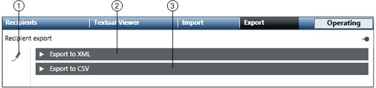
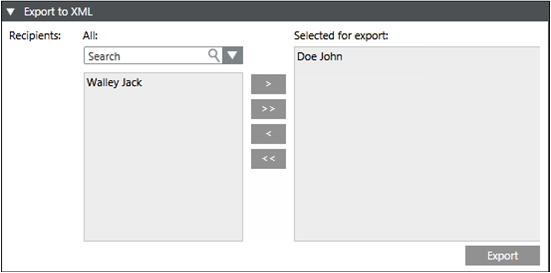
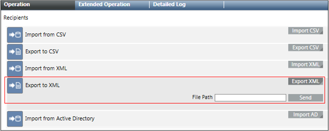
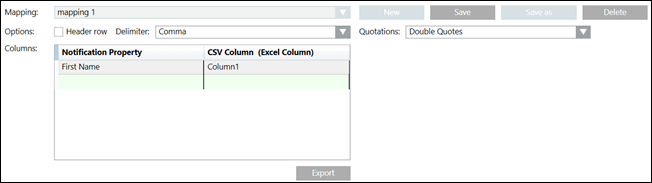
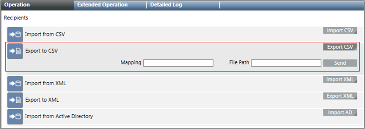

Recipient Export
The Export tab allows the user to export recipients to XML and CSV files.

| Name | Description |
1 | Recipient export edit | Enables the export options. |
2 | Export to XML | Allows the user to export recipients to an XML file. |
3 | Export to CSV | Allows the user to export recipients to a CSV file. |

NOTE:
In order to use the Export to XML function, make sure you have enabled the Notification Application Rights. For more information, refer to the Enable Notification Application Rights section in Installation and Project Setup.
Export to XML
The Export to XML expander allows the user to export recipients to an XML file.

- All: Displays all the configured recipient users.
- Search: Allows the user to search for a recipient user.
- Selected for export: Displays the recipient users selected for export to an XML file.
- Export: Exports the selected recipient users to an XML file.
Export to XML Using Command
The Export From XML property on the Operation tab allows the user to export recipients to an XML file through automatable Desigo CC commands.

- File Path: Displays the local file path of the MNS server where the XML file must be saved.
- Export XML: Displays the File Path field and Send button.
- Send: Exports all recipients in the Notification to an XML file specified in the file path.
Export to CSV
The Export to CSV expander allows the user to configure a CSV mapping and export the recipients to a CSV file.

- All: Displays all the configured recipient users.
- Search: Allows the user to search for a recipient user.
- Selected for export: Displays the recipient users selected for export to a CSV file.
- New: Allows the user to create a new mapping of the Notification properties with CSV columns.
- Save: Saves the configured mapping.
- Save as: Allows the user to save an existing mapping with a different name and configuration.
- Delete: Deletes the selected mapping.
- Quotations: Allows the user to select the type of quotation from the drop-down list.
- Mapping: Displays the name of the Notification property mapping with CSV column.
- Header row: Select this check box if the CSV file using a mapping needs to have a header row.
- Columns: Allows the user to map a Notification property with a CSV column.
- Delimiter: Allows the user to select the separator for the CSV columns from the drop-down list.
- Export: Exports the selected recipient users to a CSV file.
Export to CSV Using Command
The Export to CSV property on the Operation tab allows the user to configure a CSV mapping and export the recipients to a CSV file.

- Mapping: Specify the mapping for the CSV export.
- File Path: Displays the local file path of the MNS server where the CSV file must be saved.
- Export CSV: Displays the Mapping, File Path field and Send button.
- Send: Exports all recipients in the Notification at the specified file path in CSV format.